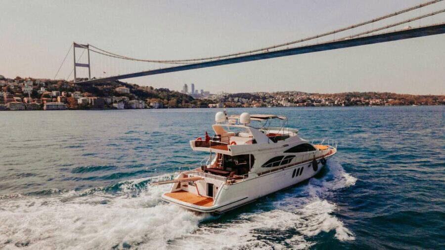

- Inicio
- Destinos
¿A dónde quieres ir?
Una selección de los destinos que más nos piden. Si el tuyo no está, también lo organizamos.

Maldivas
Atolones de agua turquesa, villas sobre el mar y un silencio que no se olvida.

Tailandia
Templos dorados, mercados flotantes y las islas de Phi Phi.

Bali
Arrozales en terraza, templos junto al lago y playas para ver el atardecer.

Japón
Tokio, Kioto y Osaka en tren bala, entre templos, jardines y neones.

Nueva York
Rascacielos, Broadway y Central Park en la ciudad que nunca duerme.

Dubái
Rascacielos imposibles, desierto dorado y playas de invierno.

Sri Lanka
Tren entre plantaciones de té, templos en la roca y safaris con elefantes.

Vietnam
La bahía de Halong, Hoi An iluminado con farolillos y el delta del Mekong.

Malasia
Kuala Lumpur, la colonial Melaka y los murales de Penang.

Sudáfrica
Ciudad del Cabo, ballenas en Hermanus, viñedos y safari.

Marruecos
Zocos, riads y una noche bajo las estrellas en el Sáhara.

Turquía
Estambul, Capadocia en globo y la costa turquesa de Antalya.

Roma
El Coliseo, el Vaticano y la mejor pasta, a dos horas de casa.

Río de Janeiro
El Pan de Azúcar, Copacabana y el Cristo del Corcovado.
¿Buscas otro destino? Cuéntanoslo y te preparamos una propuesta.

¿No encuentras tu destino?
Tu agente de viajes
Cuéntanos qué te apetece y te preparamos una propuesta a medida. Respondemos rápido por WhatsApp.